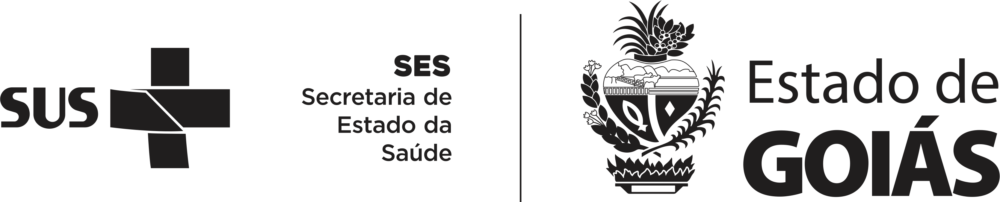

“12 das 32 unidades, entre elas a Policlínica de Posse, seguem subprogramadas para 2027, com falta de R$ 317,2 milhões (Quadro 3);”
SEI nº 95965444

PAUTA DA REUNIÃOSaúde &
Saúde &
Economia.
Condicionantes, aditivos em tramitação
e prazos de análise.
TERMOS ADITIVOS & PROGRAMAÇÃO ORÇAMENTÁRIAMaterial de apoio à reunião
PAUTA I / CONDICIONANTES
PC Posse
Citações da Secretaria de Estado da Economia
Unidades novas e/ou ampliadas
| Unidade | Incremento | Valor anterior | Valor atual | Diferença | Diferença no exercício |
|---|---|---|---|---|---|
| HETRIN | Aumento de 91% de leitos em clínica médicaAumento de 121% de leitos em clínica cirúrgicaAumento de 100% em salas cirúrgicasAumento de 150% em centro cirúrgicoImplantação da agência transfusional e escritório de gestão de alta | R$ 5.796.227,99 | R$ 9.035.343,37 | R$ 3.239.115,38 | R$ 38.869.384,56 |
| CORA | Unidade nova | - | R$ 6.022.010,75 | - | R$ 72.264.129,00 |
| HEANA | Aumento de 80% de leitos em clínica médicaImplantação do escritório de gestão de alta | R$ 9.718.407,20 | R$ 12.929.483,52 | R$ 3.211.076,32 | R$ 38.532.915,84 |
| HEAL | Unidade nova | - | R$ 9.308.858,76 | - | R$ 111.706.305,12 |
| Unidade | Incremento | Valor atual | Valor previsto 2027 | Diferença | Diferença no exercício |
|---|---|---|---|---|---|
| HUGO | Transferência fisica e ampliação de leitos | R$ 25.051.562,75 | R$ 30.000.000,00 | R$ 4.948.437,25 | R$ 59.381.247,00 |
| HEF | Incremento PS e cirurgias | R$ 7.269.556,87 | R$ 8.293.792,74 | R$ 1.024.235,87 | R$ 12.290.830,44 |
Total · diferença no exercícioR$ 333.044.811,96
Fonte: planilha “unidades ampliadas.xlsx”.
PAUTA I / CONDICIONANTES
PC SLMB
Citações da Secretaria de Estado da Economia
“A hemodiálise, maior item do novo custeio, tem referência de remuneração federal. O Anexo IV estima R$ 410.688,00 mensais para 480 sessões, ou R$ 855,60 por sessão, pelo percentil 25 do sistema Key Performance Indicators for Health – KPIH, com o transporte dos pacientes incluído. A Tabela de Procedimentos do Sistema Único de Saúde – SUS remunera a sessão em R$ 251,57 desde a competência de março de 2026, após o reajuste de 4,4% da Portaria GM/MS nº 11.179, de 12 de maio de 2026, com recursos do Fundo de Ações Estratégicas e Compensação – FAEC. A diferença não invalida o custeio, que inclui transporte e a estrutura de um serviço em implantação, mas mostra que a produção apresentada ao SUS cobriria menos de um terço do custo estimado da linha. O custeio da hemodiálise, de R$ 855,60 por sessão, supera em mais de três vezes a remuneração da Tabela SUS, de R$ 251,57. Deve a SES justificar tecnicamente o custo unitário adotado e informar a previsão de habilitação da terapia renal e da equipe de cuidados paliativos e a receita federal esperada com esses serviços;”
SEI nº 95953367
“o crescimento decorre de serviços a implantar, e não de produção realizada. As linhas em funcionamento cumprem de 90,7% a 99,2% das metas vigentes, mas a terapia renal substitutiva, o CEO e o transporte de pacientes, já contratados no Termo de Colaboração nº 4/2025, não registraram produção de abril a dezembro de 2025, por aguardarem investimento (Quadros 3 e 4). A programação de 2027 reserva apenas R$ 64.048,00 para a estruturação da hemodiálise. Deve a SES apresentar o cronograma de implantação desses serviços e o investimento correspondente;”
SEI nº 95953367
PAUTA I / CONDICIONANTES
HEF
Citações da Secretaria de Estado da Economia
“A Policlínica oferta 1.795 exames externos por mês e realiza 897, e o SADT externo do hospital caiu 73% desde 2024, quando deixou de ofertar raio-X e eletrocardiograma. O que não se explica é o efeito financeiro: a linha saiu de uma unidade sem redução de repasse e entrou em outra cujo repasse diminui, com meta acrescida em 100 exames em relação aos 310 extintos.
O crescimento de produção que justificaria o reajuste ocorreu até 2024 e já foi remunerado pelo 2º Termo Aditivo. Desde então, o repasse mensal ficou praticamente estável, passando de R$ 7.169.556,87 em junho de 2024, primeiro mês integral daquele aditivo, para R$ 7.256.639,78 em junho de 2026. No mesmo intervalo, o Índice Nacional de Preços ao Consumidor Amplo – IPCA acumulou 11,0%, de maio de 2024 a junho de 2026, segundo o Instituto Brasileiro de Geografia e Estatística – IBGE. O repasse proposto supera em 15,7% o de junho de 2024, e o aumento real, descontada a inflação, fica em torno de 4,2% (Gráfico 1).
A recomposição inflacionária explica, assim, a maior parte do reajuste, mas não o componente real, que não encontra contrapartida no volume de atendimento, enquanto o hospital deixa de prestar uma linha de serviço. Se esse componente se sustenta, o fundamento é de custo, como pessoal, insumos ou metas do Anexo I. A avaliação desse mérito e da metodologia de custeio por absorção cabe à SES.”
SEI nº 95776341
PAUTA II / ADITIVOS
Aditivos em tramitação
na Economia
Rede HEMO e PC SLMB
Rede HEMO
SEI nº 202600010051458
PC SLMB
2º Termo Aditivo ao Termo de Colaboração nº 4/2025-SES/GO
“Diante do exposto, sob o aspecto orçamentário, a cobertura do cronograma do 2º Termo Aditivo ao Termo de Colaboração nº 4/2025-SES/GO ainda não está demonstrada nos autos. Por esse motivo, esta Superintendência identifica impedimento ao prosseguimento da celebração.”
Despacho da área técnica · SEI nº 95953367
Assinado em 29/09/2026 Pendente: Despacho GAB/Economia
Assinado em 29/09/2026 Pendente: Despacho GAB/Economia
PAUTA III / PRAZO DE ANÁLISES
Primeira manifestação
da Economia
Datas e intervalos após o envio do ofício
| Unidade | Envio do ofício Economia | Manifestação SEAD | Manifestação da área técnica Economia | Ofício Economia de diligências | Manifestação Economia | Total de dias na Economia |
|---|---|---|---|---|---|---|
| CRESMPrazo · mesmo custeioSEI nº 89783056 | 16 diasapós envio do ofício | 53 diasapós manifestação SEAD | —Não houve | —Não houve | 53dias53 + 0 | |
| PC de GoianésiaDiminuição do valorSEI nº 93760719 | 5 diasapós envio do ofício | 44 diasapós manifestação SEAD | 11 diasapós ofício de diligências | 55dias44 + 11 | ||
| HUGOLPrazo · redução do custeioSEI nº 93780787 | 8 diasapós envio do ofício | 28 diasapós manifestação SEAD | 12 diasapós ofício de diligências | 40dias28 + 12 | ||
| HEFPrazo e ampliaçãoSEI nº 93512338 | 10 diasapós envio do ofício | 28 diasapós manifestação SEAD | 20 diasapós ofício de diligências | 48dias28 + 20 |
Total na Economia = (SEAD → área técnica) + (ofício de diligências → manifestação Economia). Dias corridos, sem contar o dia inicial. No CRESM, não houve as duas etapas posteriores; o segundo intervalo é zero.
SECRETARIA DE ESTADO DA SAÚDE DE GOIÁS
Obrigado.
Reunião com a Economia